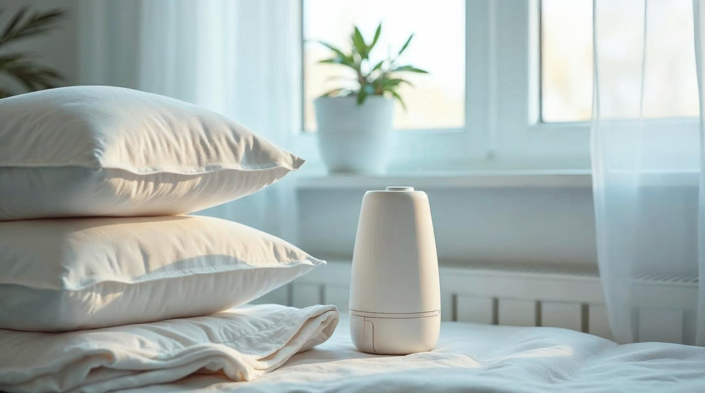
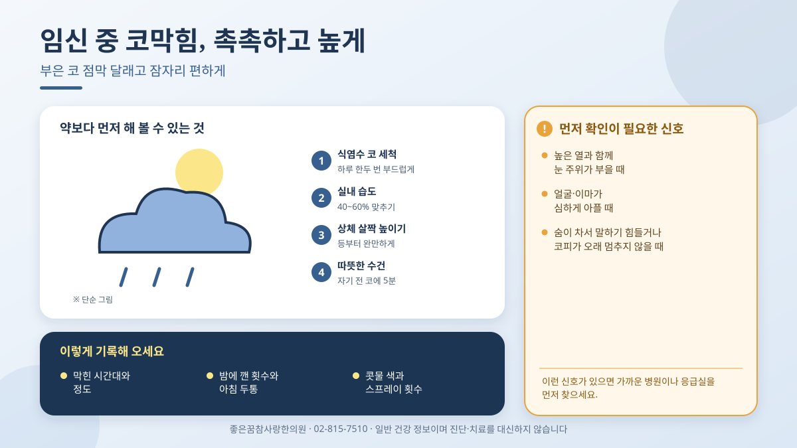

이종호 한의사 감수좋은꿈참사랑한의원 대표원장 (한의사 면허번호 19769)발행 2026-11-26 · 수정 2026-11-26
이 글의 차례
밤에 누우면 한쪽 코가 막히고, 돌아누우면 반대쪽이 막힙니다. 결국 입을 벌리고 자다가 목이 바싹 말라 새벽에 깹니다. 열도 없고 목도 아프지 않은데, 이렇게 코가 막힌 지 벌써 몇 주째입니다. 감기약을 먹기도 망설여져서 그저 휴지만 쌓여 갑니다.
임신 중 코막힘은 의외로 많은 분이 겪지만, 잘 알려져 있지 않은 불편입니다. 그래서 '감기가 낫지 않는다'거나 '임신하고 비염이 생겼다'고 걱정하시며 진료실을 찾으시는 분이 많습니다. 사실 임신 자체가 코를 막히게 만들 수 있다는 것을 아시면 걱정이 한결 줄어듭니다.
코가 막히면 잠이 얕아지고, 입으로 숨을 쉬니 목이 마르고, 아침에는 머리까지 무겁습니다. 별것 아닌 듯해도 몇 주씩 이어지면 하루의 컨디션을 꽤 많이 흔듭니다. 약을 마음 놓고 쓰기 어려운 시기라서 더 답답하게 느껴지기도 합니다.
다행히 임신 중 코막힘은 출산 뒤 몇 주 안에 가라앉는 경우가 많습니다. 그때까지 코와 잠을 조금 더 편하게 지내는 방법을 함께 찾아보겠습니다.
임신성 비염은 무엇인가요
임신성 비염은 임신 중에 감염이나 알레르기 없이 코가 막히는 상태를 말합니다. 흔히 6주 이상 코막힘이 이어지고, 출산 뒤 몇 주 안에 저절로 가라앉는 경우를 이렇게 부릅니다. 임신 시기 어느 때든 생길 수 있지만, 중기 이후에 더 많이 느끼시는 분이 많습니다.
가장 두드러진 증상은 코막힘입니다. 맑은 콧물이 조금 흐르기도 하지만 재채기나 가려움은 많지 않은 편입니다. 누우면 더 막히고, 한쪽씩 번갈아 막히는 일이 흔합니다. 코 점막이 부으면서 코피가 조금 묻어나는 분도 계십니다.
임신성 비염은 아기에게 직접 해를 주는 병이 아닙니다. 다만 잠을 방해하고 입 호흡을 늘려 엄마의 컨디션을 떨어뜨릴 수 있어서, 불편을 줄이는 생활 습관을 챙기는 것이 중요합니다.
왜 임신 중에 코가 막힐까요
임신 중에는 몸속 혈액량이 크게 늘어납니다. 코 안쪽 점막에는 가는 혈관이 아주 많이 모여 있는데, 늘어난 혈액이 이곳에도 머물면서 점막이 붓게 됩니다. 코 안의 통로가 좁아지니 숨길이 막히는 것이지요.
호르몬 변화도 함께 작용합니다. 임신 중 늘어나는 여성 호르몬은 점막을 붓게 하고 콧물을 늘리는 쪽으로 영향을 줄 수 있다고 알려져 있습니다. 여기에 아래와 같은 생활 요인이 겹치면 코막힘을 더 크게 느끼게 됩니다.
- 난방으로 실내 공기가 건조한 겨울밤
- 똑바로 누워 자는 자세
- 담배 연기, 강한 향수, 요리 연기 같은 자극
- 짠 음식을 드신 다음 날의 붓기
- 코 스프레이를 오래, 자주 쓴 경우
- 잠이 부족하고 몸이 지친 날
누우면 더 막히는 이유는 몸을 눕히면 머리 쪽으로 피가 몰리면서 코 점막이 더 붓기 때문입니다. 그래서 낮에는 견딜 만한데 밤만 되면 숨쉬기 힘들다는 분이 많습니다.
감기, 알레르기 비염과는 어떻게 다른가요
임신 중 코막힘은 감기나 알레르기 비염과 헷갈리기 쉽습니다. 아래처럼 나눠 보시면 도움이 됩니다.
- 감기는 대개 열, 목 아픔, 몸살과 함께 오고 1~2주 안에 가라앉는 경우가 많습니다.
- 알레르기 비염은 재채기, 맑은 콧물, 코와 눈 가려움이 두드러지고 계절이나 먼지, 털에 따라 심해집니다.
- 임신성 비염은 열과 가려움 없이 코막힘이 몇 주씩 이어지고, 누우면 심해지는 경우가 많습니다.
- 부비동염은 누렇거나 초록빛 콧물, 얼굴과 이마의 묵직한 통증, 냄새를 잘 못 맡는 증상이 함께 옵니다.
원래 알레르기 비염이 있던 분은 임신 뒤 증상이 심해지거나 달라지기도 합니다. 두 가지가 겹쳐 있는 경우도 있어서, 예전 비염 이야기를 함께 말씀해 주시면 살피는 데 도움이 됩니다.
누런 콧물과 얼굴 통증이 이어진다면 부비동에 염증이 생긴 것일 수 있습니다. 이럴 때는 이비인후과 진료를 받아 보시고, 쓸 수 있는 약은 산부인과 선생님과 함께 상의하시는 것이 좋습니다.
집에서 해 보는 간단한 점검
아래 질문에 스스로 답해 보세요. 진료실에서 여쭙는 내용과 거의 같습니다.
- 코막힘은 언제부터, 몇 주째 이어지고 있나요?
- 열, 목 아픔, 몸살이 함께 있나요?
- 재채기와 눈 가려움이 심한가요?
- 콧물은 맑은가요, 누렇거나 초록빛인가요?
- 누우면 더 막히나요? 밤에 입을 벌리고 주무시나요?
- 코 스프레이를 쓰고 계신가요? 하루 몇 번, 며칠째인가요?
열이 없고 맑은 콧물에 코막힘만 이어진다면 임신성 비염일 가능성이 높습니다. 반대로 열과 누런 콧물, 얼굴 통증이 있다면 감염을 생각해 봐야 하니 진료를 받아 보시는 것이 좋습니다.
먼저 이렇게 여쭙니다
처음 오시면 저는 대략 이런 순서로 여쭙니다. 미리 생각해 오시면 이야기가 훨씬 수월해집니다.
- 지금 임신 몇 주이고, 산부인과에서 들은 주의 사항이 있나요?
- 임신 전에도 비염이나 축농증이 있었나요?
- 코막힘 때문에 밤에 몇 번 깨시나요? 코를 고신다는 말을 듣나요?
- 아침에 머리가 무겁거나 목이 많이 마르나요?
- 지금 쓰는 코 스프레이, 약, 영양제는 무엇인가요?
- 집과 회사의 공기는 건조한 편인가요? 담배 연기에 노출되나요?
코골이 이야기도 여쭙니다. 임신 중에는 코막힘과 체중 변화로 코를 고는 분이 늘어나는데, 코골이가 심하고 숨을 멈추는 듯한 순간이 있다는 말을 들으셨다면 산부인과 선생님께도 함께 말씀드려 보세요.
일상에서 먼저 해 볼 수 있는 것
임신성 비염의 기본은 코 점막을 촉촉하게 지키고, 붓기를 덜 만들고, 잠자리를 편하게 하는 것입니다. 하나씩 해 보시고 편해지는 쪽을 이어 가세요.
- 생리식염수로 하루 한두 번 코를 부드럽게 씻어 주기
- 실내 습도를 40~60%로 맞추고, 가습기는 매일 깨끗이 씻기
- 베개를 조금 높이거나 상체를 살짝 세워 눕기
- 따뜻한 물로 샤워하며 김을 쐬거나, 따뜻한 수건을 코 위에 대 보기
- 담배 연기, 강한 향, 요리 연기 피하기
- 낮에 물을 충분히 마시고, 짠 음식은 조금 줄이기
코 세척은 처음에는 어색하지만 익숙해지면 꽤 편하다고 하시는 분이 많습니다. 미지근하게 데운 생리식염수를 쓰고, 고개를 옆으로 살짝 기울여 한쪽 코로 넣고 반대쪽으로 흘러나오게 합니다. 세게 짜 넣지 말고 천천히 흘려보내는 것이 요령입니다.
세척 뒤에는 코를 세게 풀지 말고 한쪽씩 가볍게 풀어 주세요. 세게 풀면 귀가 먹먹해지거나 코피가 나기 쉽습니다. 세척 도구는 쓸 때마다 깨끗이 씻어 말려 두시면 됩니다.
코 스프레이는 어떻게 하나요
약국에서 쉽게 살 수 있는 코막힘 스프레이 가운데에는 혈관을 좁혀 코를 금방 뚫어 주는 것이 있습니다. 쓰면 잠깐 시원하지만, 며칠 이상 계속 쓰면 오히려 코가 더 막히는 일이 생길 수 있다고 알려져 있습니다. 약이 떨어질 때마다 더 막히니 다시 뿌리게 되는 고리가 생기는 것입니다.
임신 중에는 어떤 약이든 쓰기 전에 산부인과 선생님이나 약사와 상의하시는 것이 좋습니다. 이미 스프레이를 오래 쓰고 계시다면 혼자 갑자기 끊기보다, 어떻게 줄여 갈지 상의해 보세요.
생리식염수 스프레이는 약 성분이 없어서 비교적 편하게 쓰실 수 있습니다. 코 안이 건조하고 따가울 때 하루 몇 번 뿌려 주면 점막을 촉촉하게 지키는 데 도움이 될 수 있습니다.

밤에 숨쉬기 편한 잠자리 요령
임신성 비염은 밤에 가장 힘듭니다. 잠자리를 조금만 바꿔도 숨쉬기가 한결 편해질 수 있습니다.
베개를 하나 더 받치거나, 매트리스 머리 쪽 아래에 수건을 접어 넣어 상체를 살짝 높여 보세요. 머리만 꺾이게 높이면 목이 아프니, 등부터 완만하게 높아지도록 하는 것이 요령입니다. 중기 이후에는 옆으로 누우시는 분이 많은데, 막힌 쪽 코를 위로 두고 누우면 조금 덜 막힌다는 분이 많습니다.
잠들기 전에 따뜻한 물로 샤워하거나 따뜻한 수건을 코와 눈 주위에 5분 정도 대 두면 코가 조금 뚫리는 느낌이 듭니다. 침실의 습도를 맞추고, 이불과 베개는 자주 털고 햇볕에 말려 먼지를 줄여 주세요.
입을 벌리고 자서 목이 마르다면 머리맡에 물을 두고, 일어나자마자 미지근한 물을 한 잔 드셔 보세요. 목이 칼칼한 느낌이 한결 덜합니다.
함께 자는 가족이 코골이 때문에 잠을 설친다면 잠시 방을 나눠 쓰는 것도 방법입니다. 서로 미안해하기보다 출산 뒤 몇 주까지의 일이라고 생각하고, 각자 푹 자는 쪽을 고르셔도 괜찮습니다. 엄마가 잘 자는 것이 지금은 무엇보다 중요합니다.
계절과 생활 공간에 따라 달라지는 코막힘
겨울에는 난방으로 실내가 건조해지고 바깥의 찬 공기와 실내의 따뜻한 공기를 오가면서 코 점막이 예민해집니다. 외출할 때 얇은 마스크를 쓰면 찬 공기가 코에 바로 닿는 것을 줄여 주어, 들어와서 코가 꽉 막히는 일이 덜하다는 분이 많습니다.
봄과 가을에는 꽃가루와 미세먼지가 코를 자극합니다. 원래 알레르기 비염이 있던 분은 이 시기에 임신성 비염과 겹쳐 더 힘들 수 있습니다. 미세먼지가 많은 날에는 창문을 닫아 두고, 외출 뒤에는 세수와 코 세척으로 코 안을 한 번 헹궈 주세요.
사무실처럼 에어컨이나 히터가 계속 돌아가는 곳에서는 책상 위에 작은 가습기나 물컵을 두고, 한두 시간에 한 번씩 물을 드셔 보세요. 점심시간에 잠깐 바깥 공기를 쐬며 걷는 것도 코와 머리를 맑게 하는 데 도움이 됩니다.
부엌에서 기름 요리를 할 때 나오는 연기도 코를 자극합니다. 요리할 때는 후드를 꼭 켜고 창문을 조금 열어 두세요.
한의원에서 함께 살필 수 있는 경우
임신 중이라도 산부인과와 상의한 뒤 한의원 진료를 함께 받으실 수 있습니다. 이런 분이라면 상담해 보세요.
- 코막힘 때문에 밤에 자주 깨고 아침이 개운하지 않은 경우
- 코막힘과 함께 이마와 눈 주위가 무겁고 머리가 아픈 경우
- 원래 있던 비염이 임신 뒤 심해져 생활이 불편한 경우
- 입 호흡으로 목이 자주 마르고 칼칼한 경우
- 손발이 차고 쉽게 지치며 코막힘이 오래가는 경우
좋은꿈참사랑한의원에서는 맥을 짚고 코막힘의 모양과 시간대, 잠과 목의 상태를 함께 여쭙습니다. 몸의 열과 찬 기운, 소화와 대소변까지 살피며 코막힘을 키우는 생활 요인을 함께 찾습니다.
진찰한 내용을 바탕으로 지금 상태에 맞는 방법을 정합니다. 코 세척과 잠자리 습관을 먼저 함께 정리하고, 침은 임신 중 피하는 자리를 가려 코와 얼굴, 목 주변에 조심스럽게 씁니다. 한약은 임신 중임을 먼저 알려 주시고 산부인과 선생님과 상의한 뒤 신중하게 정합니다.
이비인후과나 산부인과에서 처방받은 약이 있다면 혼자 멈추지 마세요. 한의원 진료는 그 진료와 나란히 갈 수 있습니다.
이렇게 기록해 오시면 상담이 쉬워집니다
코막힘은 시간대와 환경에 따라 달라지기 때문에, 짧은 기록이 큰 도움이 됩니다. 1~2주 정도만 적어 보세요.
- 코막힘이 심한 시간대와 정도(0~10)
- 밤에 코막힘으로 깬 횟수
- 콧물의 색과 양, 재채기 여부
- 코 세척이나 스프레이를 쓴 횟수
- 실내 습도와 난방, 연기나 먼지에 노출된 일
- 아침 두통이나 목마름 여부
기록을 보면 '난방을 세게 튼 밤', '짠 음식을 먹은 다음 날'처럼 코막힘이 심해지는 흐름이 보입니다. 그 흐름 하나를 바꾸는 것부터 시작해 보세요. 기록은 길지 않아도 되고, 한 줄이면 충분합니다.
출산 뒤에는 어떻게 되나요
임신성 비염은 출산 뒤 몸의 혈액량과 호르몬이 제자리를 찾으면서 몇 주 안에 가라앉는 경우가 많습니다. 출산 뒤에도 코막힘이 오래 이어진다면 그때는 알레르기 비염이나 다른 원인이 있는지 이비인후과에서 다시 살펴보시는 것이 좋습니다.
지금은 오늘 밤 베개를 조금 높이고, 잠들기 전 따뜻한 수건을 코에 대 보는 것부터 시작해 보세요. 다음에 오시면 기록부터 함께 펼쳐 보겠습니다.
이런 증상은 먼저 확인이 필요합니다
- 높은 열과 함께 눈 주위가 붓고 빨개지거나, 얼굴과 이마가 심하게 아픈 경우
- 숨이 차서 말을 잇기 힘들거나 입술이 파래지는 경우, 또는 코피가 오래 멈추지 않는 경우
이런 신호가 있으면 한의원보다 가까운 병원이나 응급실을 먼저 찾으세요.
함께 읽으면 좋은 글
- 임신 중 감기에 걸려 기침과 콧물이 이어질 때는 어떻게 지내고, 약은 어떻게 상의하나요?
- 코막힘과 누런 콧물이 오래가는 만성 부비동염(축농증)은 어떻게 살피나요?
- 임신 중 밤에 잠이 오지 않거나 자주 깰 때는 무엇을 살피고 어떻게 지내나요?
- 환절기에 목이 건조하고 칼칼할 때는 어떻게 관리하나요?
- 임신 중이거나 임신 가능성이 있을 때는 한의원에 무엇을 알려야 하나요?

여쭙는 것
- 지금 임신 몇 주이고, 산부인과에서 들은 주의 사항이 있나요?
- 임신 전에도 비염이나 축농증이 있었나요?
- 코막힘 때문에 밤에 몇 번 깨시나요? 코를 고신다는 말을 듣나요?
생활에서 해 볼 것
- 생리식염수로 하루 한두 번 코를 부드럽게 씻어 주기
- 실내 습도를 40~60%로 맞추고, 가습기는 매일 깨끗이 씻기
- 베개를 조금 높이거나 상체를 살짝 세워 눕기
한의원에서 함께 살필 것
- 코막힘 때문에 밤에 자주 깨고 아침이 개운하지 않은 경우
- 코막힘과 함께 이마와 눈 주위가 무겁고 머리가 아픈 경우
- 원래 있던 비염이 임신 뒤 심해져 생활이 불편한 경우
먼저 확인이 필요한 신호
- 높은 열과 함께 눈 주위가 붓고 빨개지거나, 얼굴과 이마가 심하게 아픈 경우
- 숨이 차서 말을 잇기 힘들거나 입술이 파래지는 경우, 또는 코피가 오래 멈추지 않는…
한눈에 보는 표
| 구분 | 핵심 |
|---|---|
| 여쭙는 것 | 지금 임신 몇 주이고, 산부인과에서 들은 주의 사항이 있나요? 임신 전에도 비염이나 축농증이 있었나요? |
| 생활에서 해 볼 것 | 생리식염수로 하루 한두 번 코를 부드럽게 씻어 주기 실내 습도를 40~60%로 맞추고, 가습기는 매일 깨끗이 씻기 |
| 한의원에서 함께 살필 것 | 코막힘 때문에 밤에 자주 깨고 아침이 개운하지 않은 경우 코막힘과 함께 이마와 눈 주위가 무겁고 머리가 아픈 경우 |
| 먼저 확인이 필요한 신호 | 높은 열과 함께 눈 주위가 붓고 빨개지거나, 얼굴과 이마가 심하게 아픈 경우 숨이 차서 말을 잇기 힘들거나 입술이 파래지는 경우, 또는 코피가 오래 멈추지 않는 경우 |
자주 묻는 질문
임신 중 코막힘은 언제까지 가나요?
임신성 비염은 출산 뒤 몇 주 안에 가라앉는 경우가 많습니다. 출산 뒤에도 오래 이어진다면 알레르기 비염이나 다른 원인이 있는지 이비인후과에서 살펴보시는 것이 좋습니다.
임신 중에 코 세척을 해도 되나요?
생리식염수로 하는 코 세척은 약 성분이 없어 비교적 편하게 하실 수 있습니다. 미지근한 식염수를 쓰고, 세척 뒤에는 코를 세게 풀지 말고 한쪽씩 가볍게 풀어 주세요.
약국에서 산 코막힘 스프레이를 써도 되나요?
임신 중에는 어떤 약이든 쓰기 전에 산부인과 선생님이나 약사와 상의하시는 것이 좋습니다. 혈관을 좁히는 스프레이는 오래 쓰면 오히려 코가 더 막힐 수 있다고 알려져 있습니다.
임신 중 코막힘에 침을 맞아도 되나요?
임신 중임을 먼저 알려 주시면 피하는 자리를 가려 조심스럽게 진료합니다. 산부인과에서 들은 주의 사항이 있다면 처음에 함께 말씀해 주세요.
임신 중 비염에 한약을 먹어도 되나요?
임신 중이라는 사실을 먼저 알려 주시고, 산부인과 선생님과 상의한 뒤 지금 상태에 맞는지 신중하게 정합니다. 쓰고 계신 스프레이와 약도 함께 확인합니다.
좋은꿈참사랑한의원은 재진 때 지난번 이야기부터 이어서 여쭙니다. 진료시간과 예약은 오시는 길에서 확인하세요.
어디서 상담받을 수 있나요?
좋은꿈참사랑한의원은 서울 동작구 만양로2길 2 신성빌딩 3층·5층(서울 동작구 상도동, 7호선 상도역 3번 출구 근처)에 있습니다. 한의사 3명(이종호 대표원장, 조영기 수석진료원장, 정원영 진료원장)이 진료합니다. 진료시간은 평일 09:30~20:00(점심 13:00~14:00), 토·일·공휴일 09:30~15:00이며, 방문 전 전화로 확인을 권합니다. 예약은 네이버 예약, 카카오톡 상담, 전화 02-815-7510로 받습니다.
이 글은 일반적인 건강 정보이며 개인의 진단이나 치료를 대신하지 않습니다. 증상이 있거나 복용 중인 약이 있다면 진료를 통해 확인하세요. 치료 효과는 개인마다 다를 수 있습니다.
작성 기준: 일반적으로 알려져 있는 건강 정보를 참고해 정리했습니다(대표원장 감수). 증상 기록은 1~2주 동안 하루 1회, 비슷한 시간에 적어 오시면 지난 상태와 비교하기 쉽습니다.